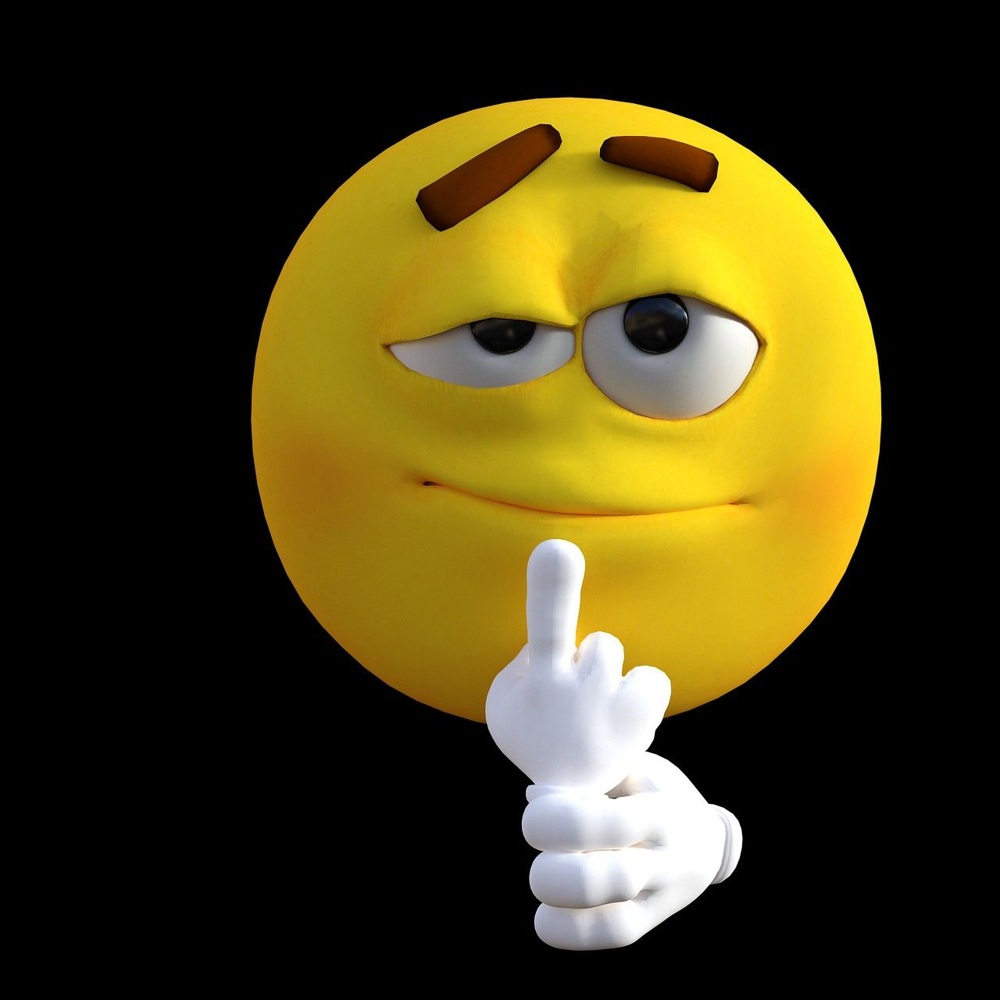

Фритрек и нулевой спринт: Подготовка к работе
заряжен работать

Это было самое начало пути. На этом этапе важно было проникнуться основами и настроиться на учёбу. И, возможно, подумать, как новые знания могут повлиять на ваше будущее.
Я был в предвкушении предстоящих трудностей. Очень хотелось поскорее изучить то, что не далось благодаря видеоурокам.